3下學期 第 4 章
環境保護與永續
答案卡
點題號可跳到該題詳解。開啟「遮住答案」後，點一下塗卡格才會顯示答案。
詳解
臭氧可吸收紫外線，丁處在臭氧層之外，因此測得的紫外線量最多。故選(D)。
看題目
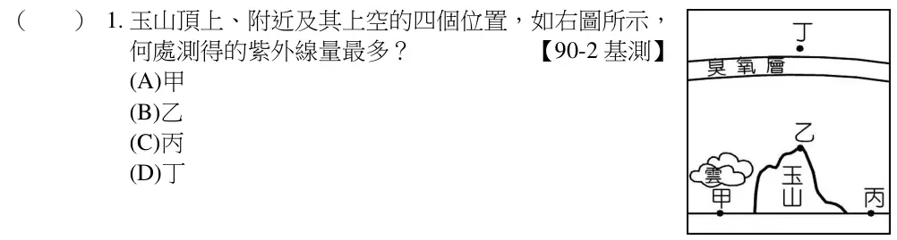
(A)酸雨的形成是因為人類排放過多的碳、氮、硫等氧化物至空氣中所造成，這些非金屬氧化物與水反應會形成酸性物質；(C)空氣汙染指標愈小代表空氣品質愈好；(D)水、二氧化碳和甲烷是主要的溫室氣體。故選(B)。
看題目
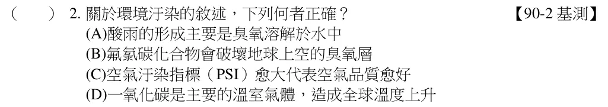
當溫室氣體含量增加時，大氣會吸收更多的地表輻射，使全球氣溫升高，極地和高山的冰層會隨之融化，僅而使得海水面上升。故選(B)。
看題目
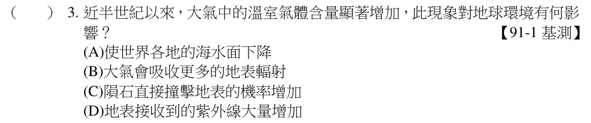
看題組文章
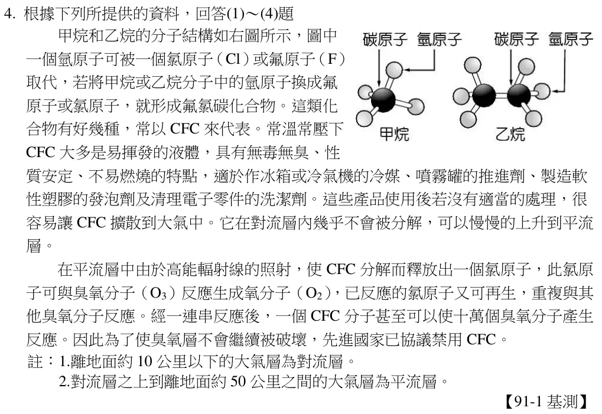
乙烷的化學式為C2H6 共有8 個原子，CFC 是氫被氯原子或氟原子取代，故碳仍為2 個原子，總共仍然保持8 個原子。故選(D)。
看題目
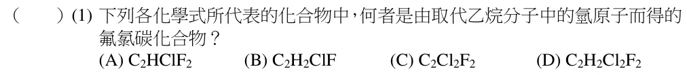
由文中可知，常溫常壓下CFC 大多是易揮發的液體，具有無毒無臭、性質安定、不易燃燒的特點。故選(D)。
看題目
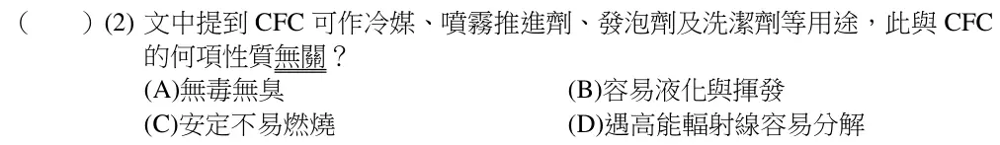
CFC 會與臭氧反應，破壞臭氧層，使得地表紫外線增加。故選(A)。
看題目
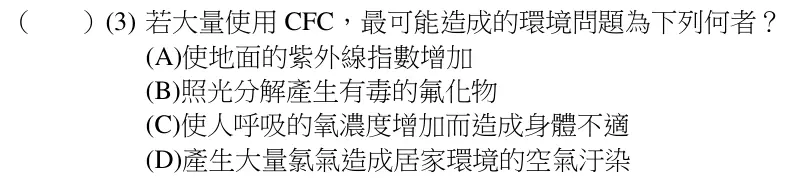
由文中可知，CFC 分解而釋放出一個氯原子，此氯原子可與臭氧分子（O3）反應生成氧分子（O2），已反應的氯原子又可再生。故選(C)。
看題目
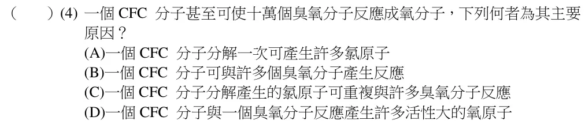
若在水庫上游砍伐樹木，雨季來臨時，地面土石缺乏植被保護，會與水混合而流入水庫，增加水庫的泥沙淤積量。故選(C)。
看題目
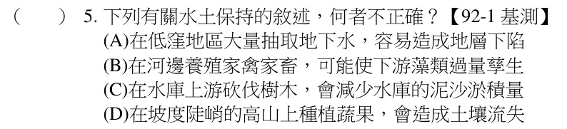
黑潮為由經過臺灣東部的溫暖海水所形成。故選(D)。
看題目
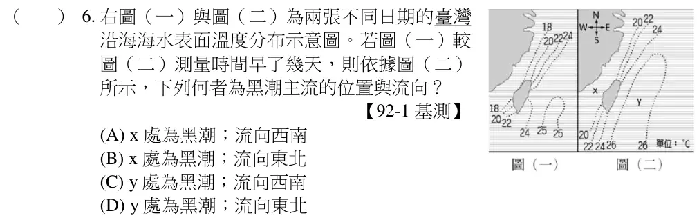
(A)兩地高度不同，無法比較；(C)表中數值為平均值，並非不變；(D)由溫度差可知，臺北的氣溫上升趨勢較阿里山劇烈。故選(B)。
看題目
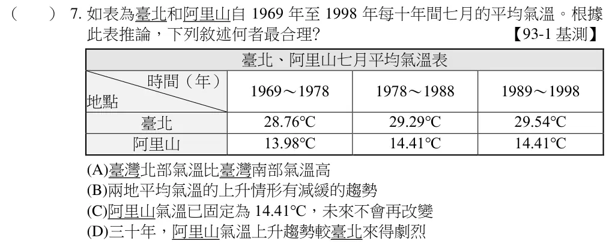
看題組文章
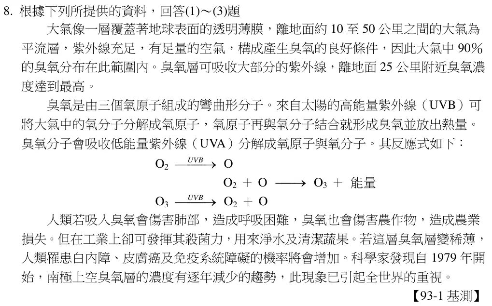
臭氧是由三個氧原子所組成的彎曲型分子。故選(C)。
看題目
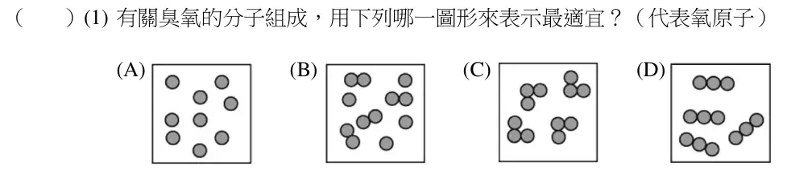
人類若吸入臭氧會傷害肺部，造成呼吸困難。故選(D)。
看題目
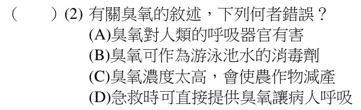
90%的臭氧集中在平流層（10～50 公里）中，又多集中在約25 公里高處，分布並不均勻。故選(B)。
看題目
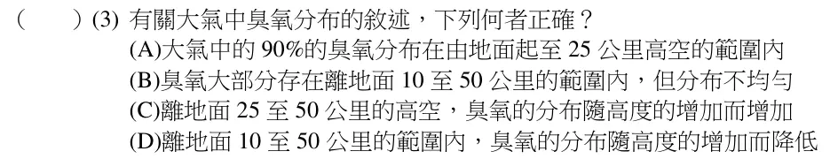
燃燒化石燃料會產生大量的二氧化碳，二氧化碳為溫室氣體之一。故選(A)。
看題目
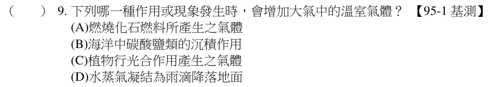
南極大陸百分之九十九被冰河所覆蓋，而且冰層的平均厚度約為一千七百公尺，這裡的冰占了全世界總量的百分之九十左右。如果南極的冰全部溶化流入海中，將會使全球的海面上升六十至八十公尺。故選(B)。
看題目
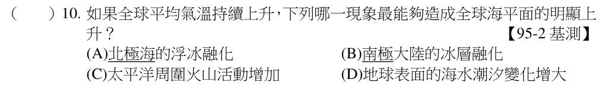
(A)聖嬰現象發生時，祕魯發生水災、印尼則會發生旱災；(B)聖嬰現象是指在一年中在聖誕節前後發生的氣候異常；(D)影響全球氣候的聖嬰現象，每隔2～7 年才會發生一次。故選(C)。
看題目
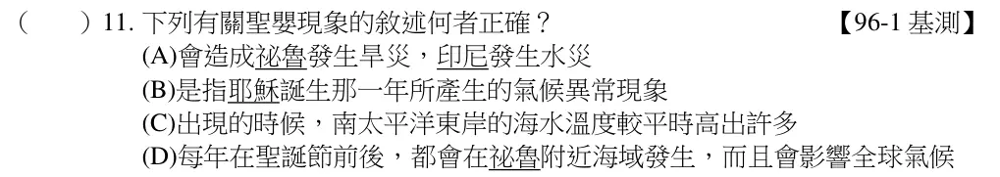
臭氧的功能主要是吸收紫外線，故平流層中的臭氧減少時，會使得地表紫外線的入射量增加，使得地表生物健康受到影響。故選(B)。
看題目
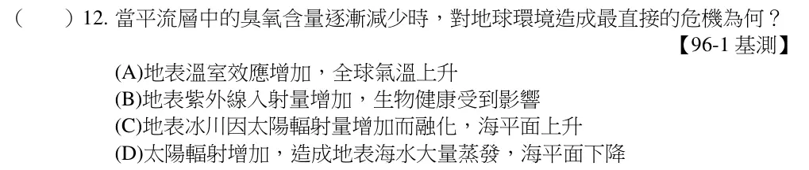
形成土石流的條件為土石鬆散、坡度大、地層含水量大，由此可知乙地區最容易發生土石流。故選(B)。
看題目
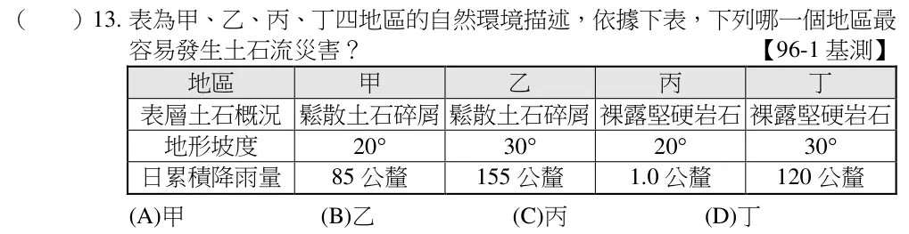
對照分布圖和色階表即可得知。故選(D)。
看題目
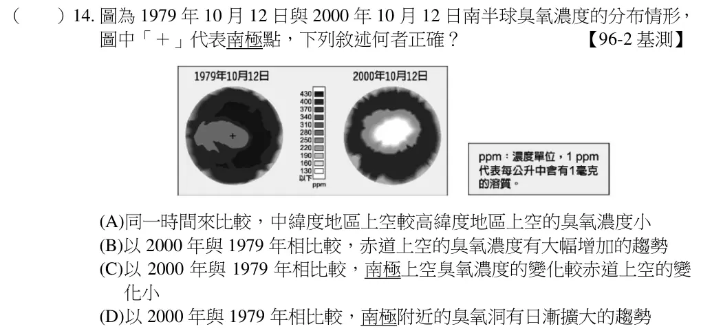
順向坡是地表傾斜方向和地層傾斜方向相同者，由圖中可知甲、乙兩處坡向與地層傾斜方向都相同，即甲、乙皆為順向坡。故選(B)。
看題目
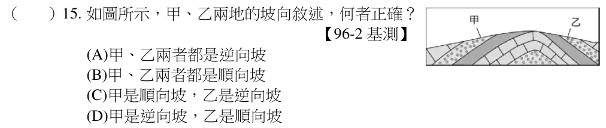
由圖中等溫線可知，22℃＜甲＜23℃、16℃＜乙
＜17℃、20℃＜丙＜21℃、13℃＜丁＜14℃，甲區域溫度最高。故選(A)。
看題目
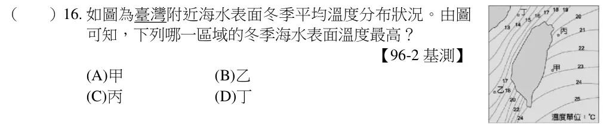
(A)受到西南季風影響；(B)由南部沿岸受海流侵蝕而來；(D)並不會造成聖嬰現象。故選(C)。
看題目
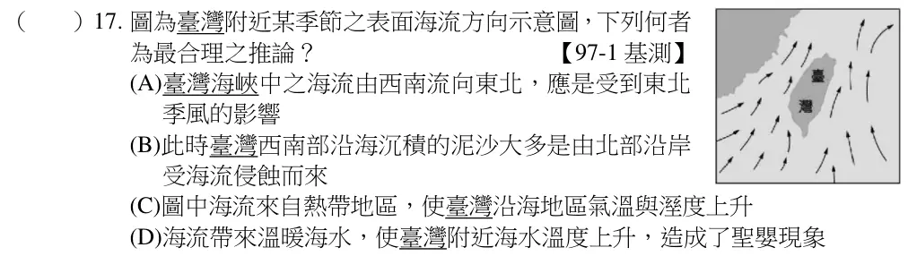
臭氧主要集中於平流層，而平流層的位置是丙。故選(C)。
看題目
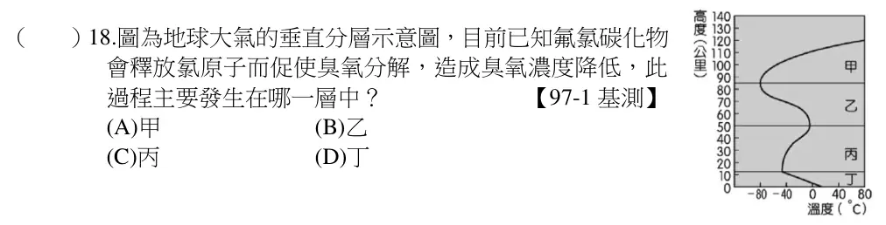
全球暖化的加遽，會造成氣溫上升及海平面上升，而生物為適應環境的改變，可能會往高緯度或高海拔地區遷移。故選(C)。
看題目
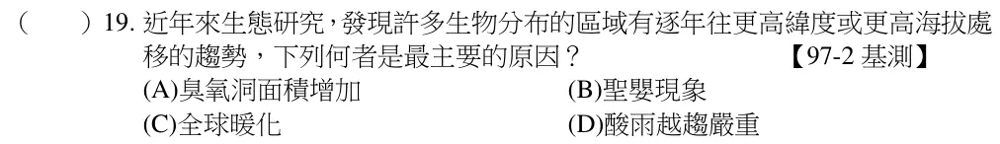
臭氧層可保護陸地生物免於
紫外線的傷害，而於圖表中可知在志留紀時已有陸生生物活動，且往後更有大量陸生生物活動，代表在志留紀時，大氣中已有相當含量的臭氧。故選(A)。
看題目
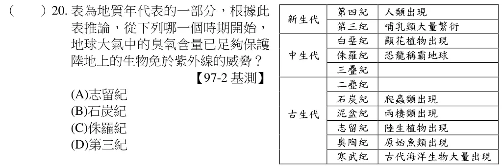
溫室氣體主要吸收地球輻射出的紅外線，而產生溫室效應。故選(D)。
看題目
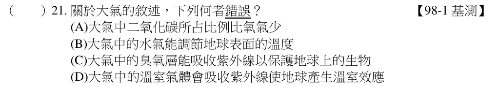
(A)二氧化碳有逐年增加，但未趨於一穩定數值；(B)溫度隨季節的變化而有所增減，二氧化碳僅與溫度增加的趨勢相符；(C)二氧化碳是地球原有的氣體，並非人類使用化石燃料才出現。故選(D)。
看題目
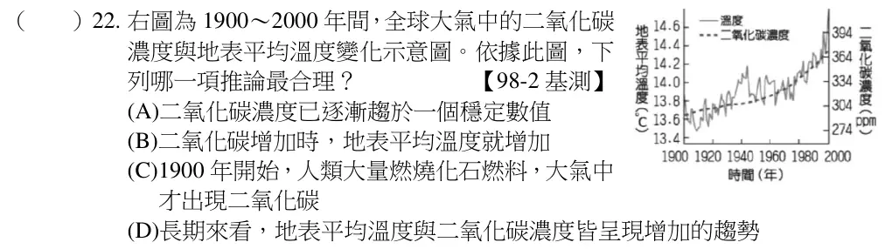
判斷山坡為順或逆向坡，需由坡面與岩層傾斜方向而定。若坡面與岩層傾斜同向，稱為順向坡，較危險，最需建立擋土牆；如果坡面與岩層傾斜反向，則為逆向坡，較安全。故選(C)。
看題目
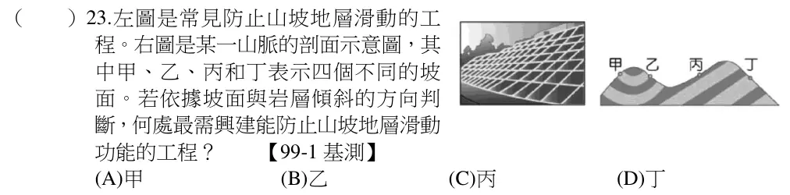
(A)大氣中含量最多為氮氣，氧氣次之。(B)溫室氣體包含二氧化碳、甲烷和水氣。(C)大氣中臭氧濃度減少是造成臭氧層破洞原因。(D)造成天氣現象的成分主要為水氣。故選(B)。
看題目
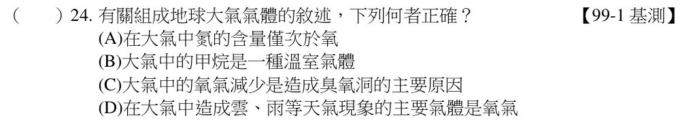
氟氯碳化物的大量使用，主要是破壞臭氧層，使地面的紫外線值愈來愈高。故選(A)。
看題目
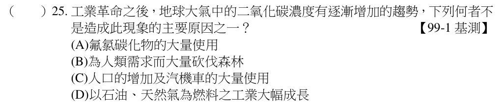
教用版答案欄印為 (A)，但解析與題意（臭氧層集中於離地表 20～30 公里）皆指向 (B)，本站已更正為 (B)。
依據題意得知，該氣體為臭氧；而大部分臭氧層，則集中於離地表20～30 公里處。故選(B)。
看題目
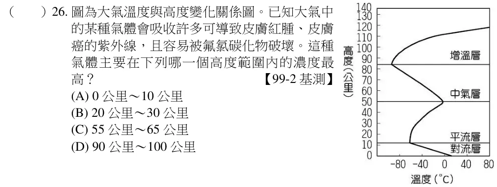
全球暖化成因，是大氣中的溫室氣體，在吸收大量的地表紅外線輻射所導致。故選(C)。
看題目
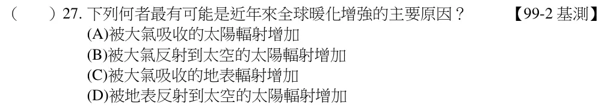
土石流發生，是因為山坡地坡度太陡、人為破壞或因地震過後，伴隨大量雨水而導致。所以即使沒有人為破壞，大自然都會發生土石流。故選(B)。
看題目
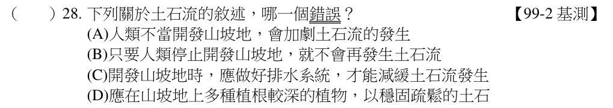
地球上的臭氧大部分集中在平流層底部，離地表20km～30km 處的濃度最高，又將此區命為臭氧層；臭氧層的功能在於吸收紫外線以保護地球上生物。故選(B)。
看題目
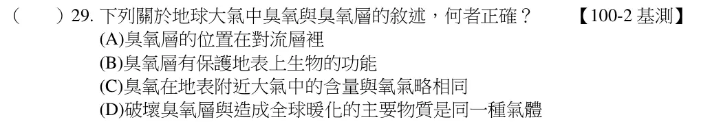
(B)大氣中含量最多的氣體是氮氣；(C)造成全球暖化的主要氣體是二氧化碳；(D)造成天氣變化的主要氣體是水氣。故選(A)。
看題目
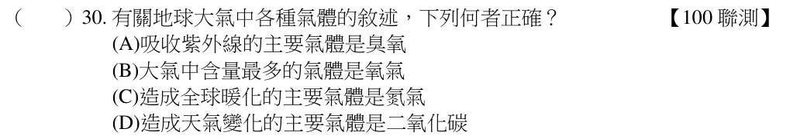
坡面和岩層傾斜面方向相同的山坡稱為順向坡。故選(C)。
看題目
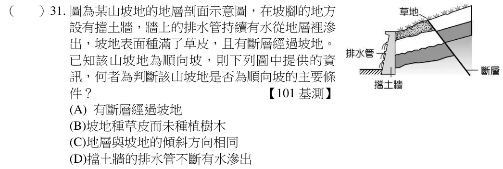
(A)地震監測的項目為震波、能量與震度；(B)土石流監測的項目為雨量；(C)全球暖化監測的項目為氣溫；(D)寒流（寒潮）監測的項目也是氣溫。故選(B)。
看題目
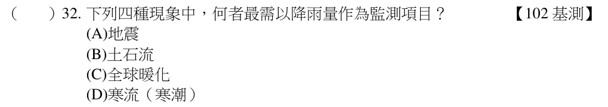
當岩層的傾斜方向與坡面傾向相同時，我們稱為順向坡，此種地質構造地區最容易發生山崩，因只有(A)選項靠山路側岩壁屬於順向坡，其餘(B)、(D)則屬於逆向坡，(C)則為水平岩層。故選(A)。
看題目
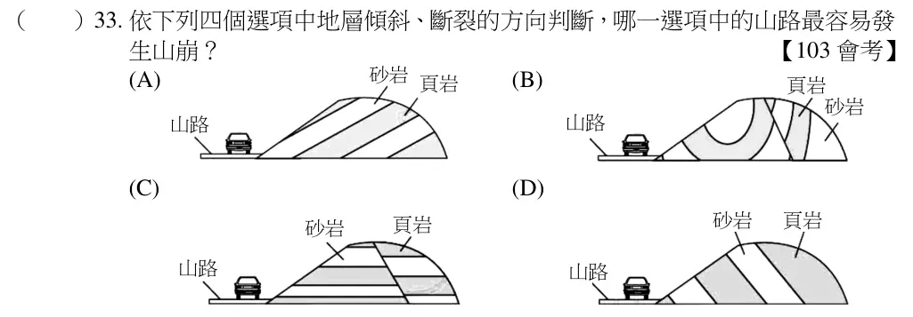
溫室效應與全球暖化自古以來一直存在於地球上，凡會吸收紅外線長波輻射的氣體皆可被稱為溫室氣體，故溫室氣體增加必然會造成全球溫度上升。若人類持續使用化石燃料，則依舊會排放像二氧化碳般的溫室氣體，而無法有效地減緩全球增溫現象。故選(B)。
看題目
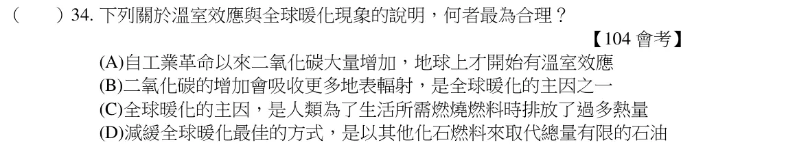
聖嬰現象的發生，主要導因於太平洋低緯度地區東風減弱西風增強所致，使得太平洋東岸低緯度地區缺乏東風吹拂，而造成水體留在原地而增溫，也使東岸湧升流消失，致使該地水體熱量增加而易降雨。故選(B)。
看題目
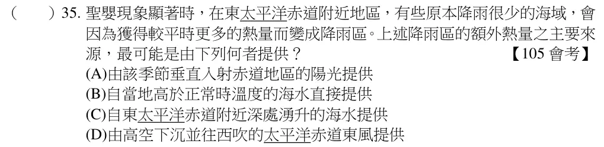
溫室效應主因是，大氣中的溫室氣體吸收地表紅外線長波輻射而造成的增溫現象，其餘的輻射吸收所造成的增溫有限。故選(A)。
看題目
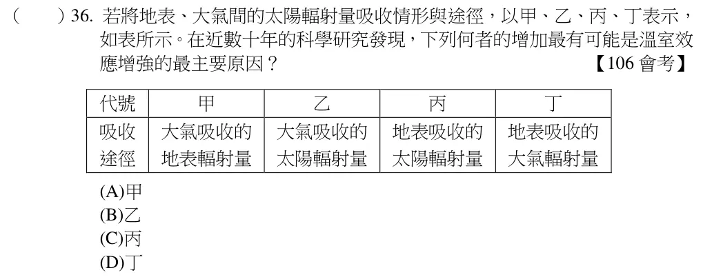
左圖中，漁民無法捕魚，是因為聖嬰現象造成祕魯外海表層水溫改變，而使漁獲減少。而右圖漁獲豐富，主要是正常年無聖嬰現象時，祕魯外海有強烈的湧升流，將海底低溫的海水，以及營養鹽帶至海表面，進而使魚群群聚形成漁場。故選(C)。
看題目
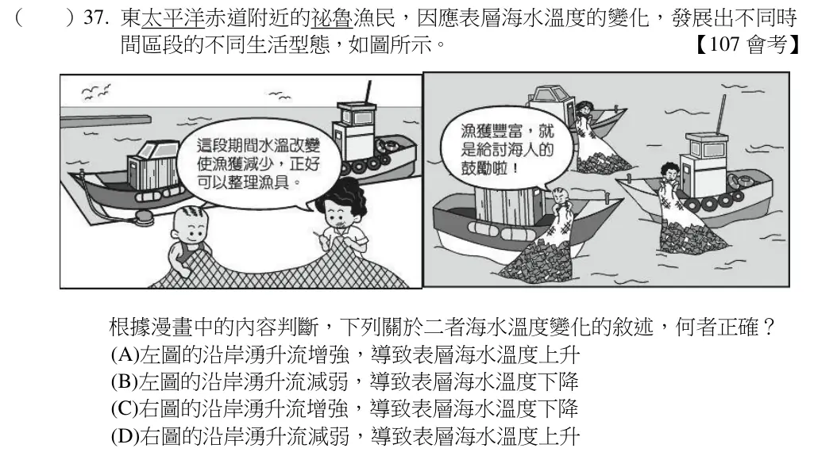
溫室效應是指地球的大氣層因為吸收輻射能量，使得地球表面升溫的效應。因此一氧化二氮會造成溫室效應，最可能是本身會吸收地表輻射的特性。故選(B)。
看題目
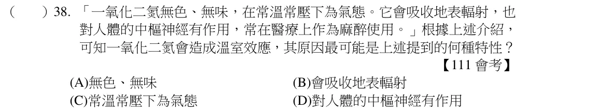
臺灣夏天盛行西南季風，且臺灣東部海流有黑潮終年由南向北流，有助於臺灣航海向北至沖繩進而到達日本。故選(B)。
看題目
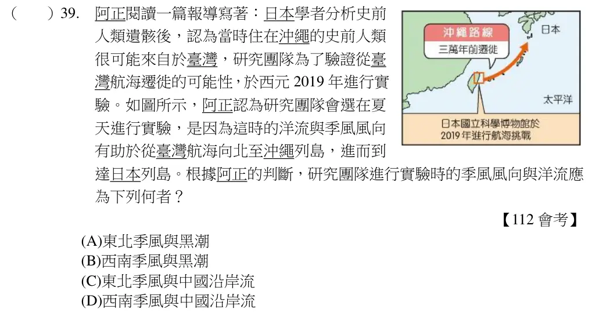
由圖可知，相同體積的飲品，其碳排放量比較：牛奶＞米漿＞豆漿＞燕麥奶＞杏仁奶，因此當碳排放量相同時，飲品的產量應為：杏仁奶＞燕麥奶＞豆漿＞米漿＞牛奶。故選(D)。
看題目
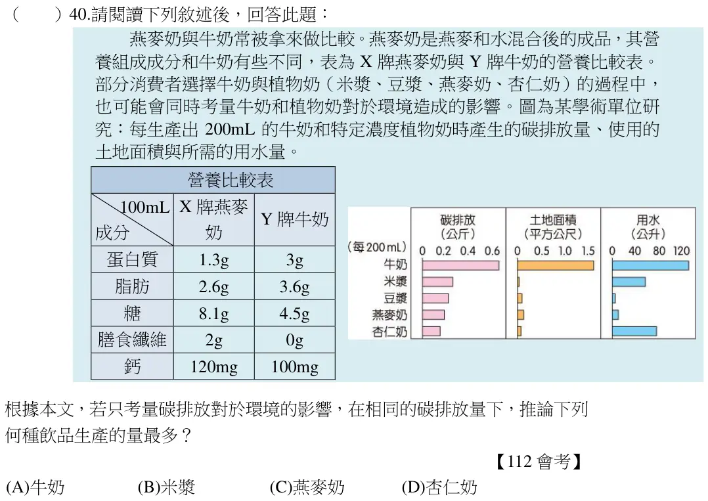
共同閱讀文章（第 41～42 題）
看文章
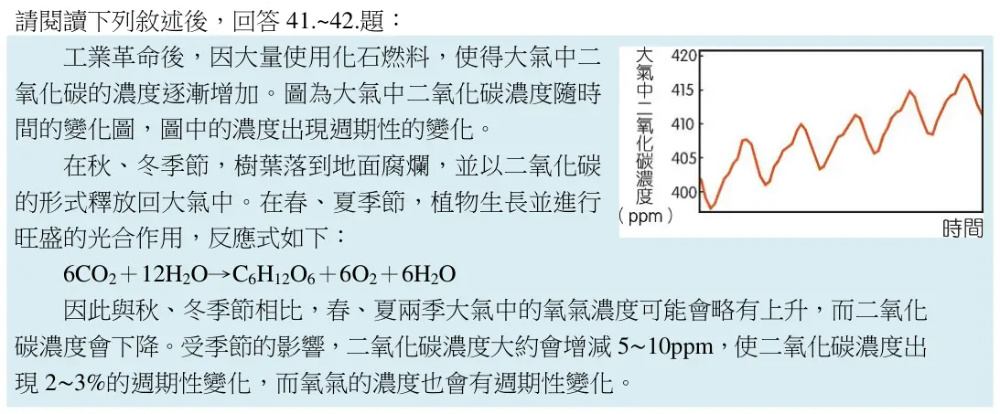
文章中提到二氧化碳會以秋冬、春夏的季節來進行週期性的變化。從圖來看，一個波峰（秋冬）加一個波谷（春夏）就是一年，剛好為一個週期，圖中為五個波，也就是五年。故選(C)。
看題目
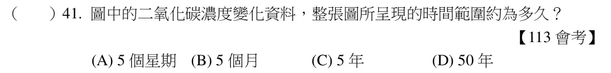
本題在考大氣組成的觀念，雖然氧氣也有週期性變化，但氧氣在大氣組成中比二氧化碳的比例要高得多，除非產生的量夠大，不然要讓氧氣有大幅變化，會比二氧化碳難很多。故選(C)。
看題目
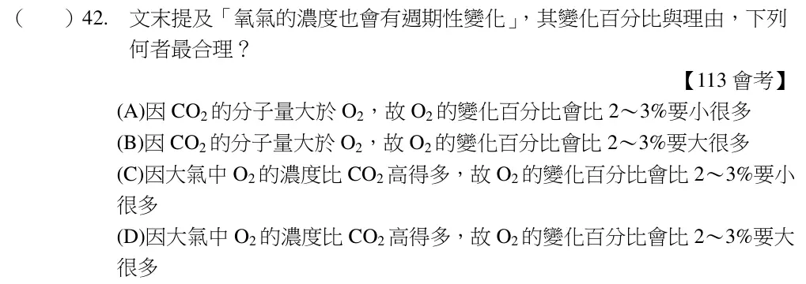
題幹強調的是超抽地下水，導致的現象應該為地層下陷。(B)應為順向坡的影響；(C)則為土石流造成；(D)則為地震導致的災情。故選(A)。